About
Data-intensiveness, complex system, and machine intelligence are the major
themes of my research. My primary research interest lies in making statistical inference and
testing hypothesis based on the analysis of data from a wide range of observations that span
from sub-nanoscale physical system to larger structures in science and technology.
Use of machine intelligence and the latest computing technologies in my research and
development enable large-scale modeling and visualization that often lead to amazing
insightful understandings.
Contact
Projects
|
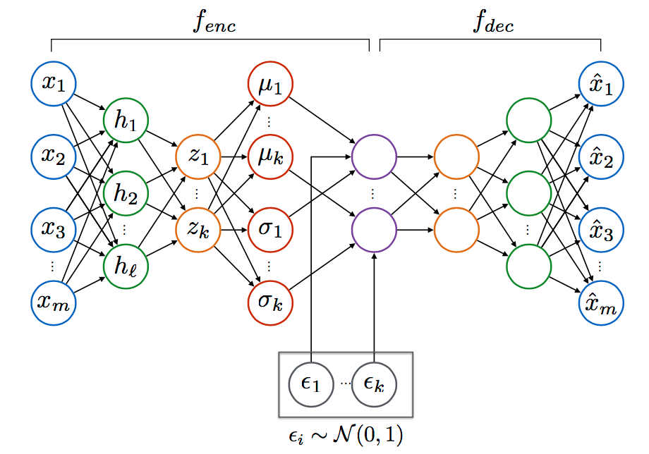
|
Semi-supervised Learning with Deep Generative Models for Asset Failure Prediction
We have successfully integrated one of the deep generative models (DGM) known as variational autoencoder (VAE)
in the semi-supervised learning for the modeling of asset failure. It allows us to build prognostic models
with the limited failures in historical data for the precise prediction of future asset reliability
|
| | |
|
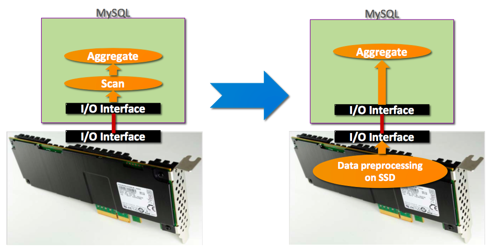
|
YourSQL: A High-Performance Database System Leveraging Near-Data Processing
Our team has successfully integrated the NDP framework (Biscuit) into a modern
database system and showed the integrated system is capable of accelerating data-intensive
applications nearly up to x160 and achieving significant energy saving.
|
| | |
|
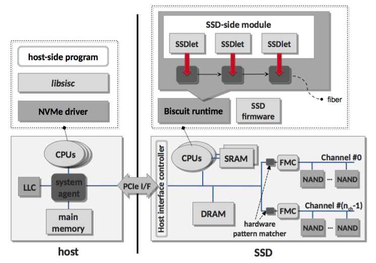
|
Biscuit: A Framework for Near-Data Processing of Big Data Workloads
Can a storage system become intelligent? By leveraging in-storage compute
capability of a modern solid-state drive (SSD), our team has designed and built a novel
Near-data processing (NDP) framework that can be programmed to perform user-defined
operations within storage.
|
| | |
|
|
Developing FTL for Samsung V-NAND SSD
Flash Translation Layer (FTL) is one of the most important software engines inside
flash memory products. I have developed and implemented a series of new FTL algorithms
that have improved performance of Samsung's major SSD products including the latest
portable SSD T1.
|
| | |
|
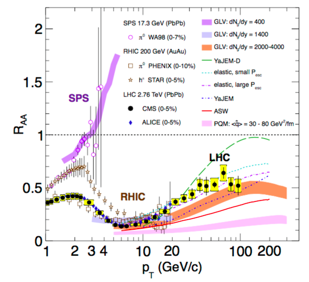
|
Study of high-pT charged particle suppression in PbPb
compared to pp collisions at √sNN = 2.76 TeV
Jet quenching is an intriguing property of a new state of matter that distinguishes the new
state from ordinary nuclear matter state. We measured the jet quenching over an unprecedentedly
wide momentum range from the collisions of heavy nuclei at the Large Hadron Collider (LHC).
|
| | |
|
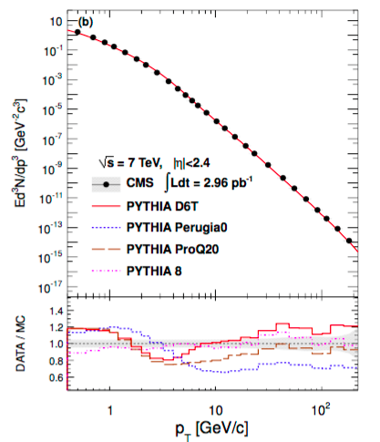
|
Charged particle transverse momentum spectra in pp collisions at 0.9 and 7 TeV
and interpolated spectra at 2.76 TeV
We have measured the particle production in the collisions of proton-proton at the
center-of-mass energy of 0.9 and 7 TeV. Along with the other measurements at different
energies, we studied a phenomenological scaling of particle production.
|
| | |
|
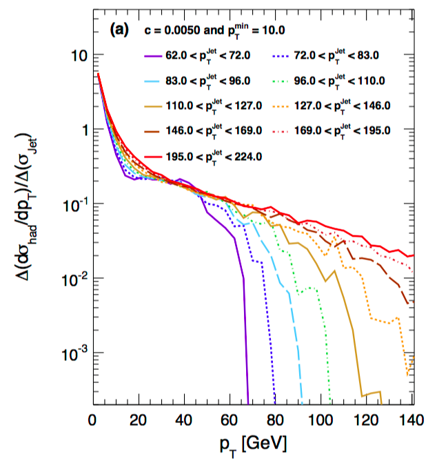
|
Convoluting jet spectra with fragmentation functions: a cross-check of
the charged particle pT spectrum
While disputing the surprising excess at large p T measured by
CDF collaboration, we designed a new method called a convolution technique.
The methods provides a way to cross-check two different observables: particle and jet spectra.
|
| | |
|
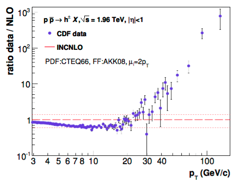
|
Single-inclusive production of large-pT charged particles in hadronic
collisions at TeV energies and perturbative QCD predictions
Based on the next-to-leading order (NLO) perturbative QCD calculations as well as a
phenomenological scaling, we questioned the surprisingly large excess of produced particles
at large p T measured by CDF collaboration. The CDF result at large p T
was withdrawn in reaction to this work and others.
|
| | |
|
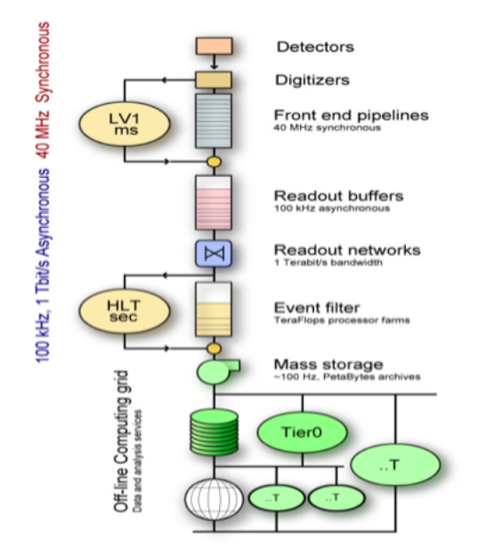
|
Commissioning of the CMS High Level Trigger
High Level Trigger (HLT) system is a critical component of CMS data acquisition system.
It is designed to select "interesting" collisions from unprecedentedly large number of
collisions with a rate up to 40 MHz. Prior to the first LHC run, the HLT system was
intensively validated in the online environment with the data from Monte Carlo simulation
and cosmic rays.
|
| | |
|
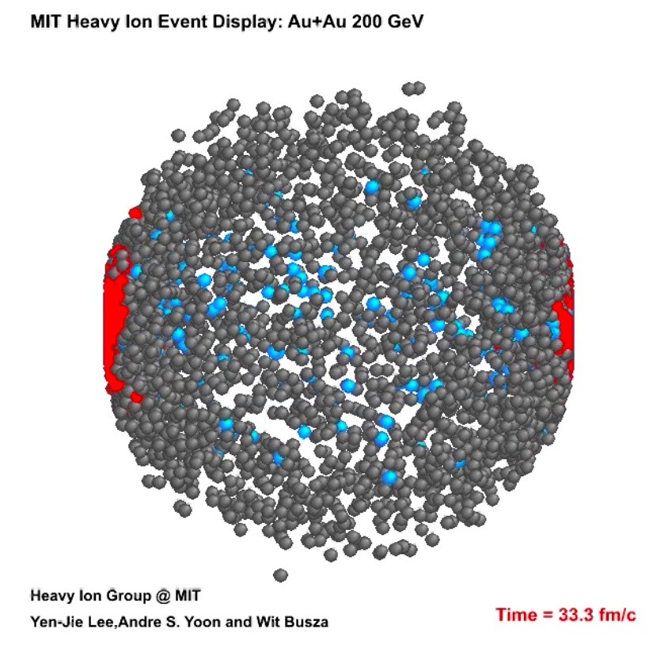
|
Visualization of Heavy Ion Collisions
We have created the MIT Heavy Ion Event Display that visualizes heavy ion collisions
that are simulated by HIJING Monte Carlo model. Incorporating the theory of special relativity,
the animation beautifully illustrates how the dense system of particles with different time dilation
factor evolve as a function of time.
|
Publications
A.S. Yoon, Taehoon Lee, Yongsub Lim, et al., Semi-supervised Learning with Deep Generative Models for Asset Failure Prediction , 2nd ACM
SIGKDD Workshop on Machine Learning for Prognostics and Health Management, KDD 2017.
I. Jo, D.-H. Bae, A.S. Yoon, et al. YourSQL: A High-Performance Database System Leveraging In-Storage
Computing , to appear in Prcoceedings of the 42nd International Conference on Very Large Database,
VLDB 2016
B. Gu, A.S. Yoon, D.-H. Bae, et al. Biscuit: A Framework for Near-Data Processing of Big Data Workloads ,
to appear in Proceedings of the 43rd International Symposium on Computer Architectures, ISCA 2016.


Y. Ki, et al. In-Storage Computing: Ultimate Solution for Accelerating I/O Intensive Applications ,
in Proceedings of Flash Memory Summit, 2015
CMS Collaboration ( as a lead analyzer), Study of high-pT charged particle
suppression in PbPb compared to pp collisions at √sNN = 2.76 TeV ,
Eur. Phys. J. C (2012) 72:1945
A.S. Yoon for the CMS collaboration, Centrality and pT dependence of charged particle RAA
in PbPb collisions at √sNN = 2.76 TeV , J.Phys.G38 124116 (2011)
CMS Collaboration ( as a lead analyzer), Charged particle transverse momentum spectra in pp collisions
at 0.9 and 7 TeV and interpolated spectra at 2.76 TeV , JHEP 08 (2011) 086
CMS Collaboration, Observation and studies of jet quenching in PbPb collisions at 2.76 TeV ,
Phys. Rev.C 84, 024906 (2011)
F. Arleo, D. d'Enterria, A.S. Yoon, Single-inclusive production of large-pT charged particles in
hadronic collisions at TeV energies and perturbative QCD predictions , JHEP 06 (2010) 035
A.S. Yoon, E .Wenger, G. Roland, Convoluting jet spectra with fragmentation functions: a cross-check
of the charged particle pT spectrum , arXiv:1003.5928 (2010)
CMS Collaboration, Transverse-momentum and pseudorapidity distributions of charged hadrons in pp
collisions at √s = 7 TeV , Phys Rev Lett 105 (2010) 022002
CMS Collaboration, Transverse momentum and pseudorapidity distributions of charged hadrons in pp
collisions at √s = 0.9 and 2.36 TeV , JHEP 02 (2010) 041
Y. Chen, V. Chetluru, Y.J. Lee, C. Loizides, C. Roland, G. Roland, M.B. Tonjes, Y. Yilmaz, A.S. Yoon
Study of photon-tagged jet events in high-energy heavy ion collisions with CMS ,
Eur. Phys. J. C4 (2009) 61:649-658
L. Agostino et al. Commissioning of the CMS High Level Trigger , 2009 JINST 4 P10005
Talks
Talk for the 2nd ACM SIGKDD Workshop on Machine Learning for Prognostics and Health Management
Halifax, Nova scotia - Canada, August, 2017, Semi-supervised Learning with Deep Generative Models
for Asset Failure Prediction
Seminar at the Multidisciplinary club of scientists and engineers (CKB),
Seoul, South Korea, November, 2014, Physics of GPS
Invited lecture for the annual field engineer training session, Samsung Electronics,
Memory Division, August 2013, Introduction to Flash Translation Layer
Invited talk for Heavy Ion Meeting (HIM), Jeonju, South Korea, October 2012,
Jet Quenching and RAA: Experiment
Invited talk for Korean Teachers Program at CERN, Geneva, Switzerland,
August 07, 12, Heavy Ion Physics with ALICE and CMS at LHC
Invited talk at Q2C center, Seoul National University, Seoul, Korea, August 2011,
Measurement of RAA in PbPb collisions at the LHC with CMS detector
Invited talk at the Nuclear Laboratory, Korea University, Seoul, Korea, August 2011,
Measurement of RAA in PbPb collisions at the LHC with CMS detector
Invited talk at the Nuclear Laboratory, Yonsei University, Seoul, August 2011,
Measurement of RAA in PbPb collisions at the LHC with CMS detector
Talk for High-p T Probes of High-Density QCD at the LHC,
Ecole Polytechnique, Palaiseau, France, May 30–June 01, 2011, RAA in CMS
Parallel talk for XXII International Conference on Ultrarelativistic Nucleus-Nucleus Collisions
(Quark Matter), Annecy, France, May 23–28, 2011,
Centrality and transverse momentum dependence of the nuclear modification of
charged particle spectra in PbPb collisions at 2.76 TeV from CMS
Poster presentation for the site-visit of NSF, University of Illinois at Urbana-Champaign, IL,
2005 Test of charge symmetry breaking via W-production at PHENIX
Poster presentation for the 2004 Fall Meeting of the Nuclear Physics in Chicago, IL, 2004,
Resistive plate counters for the PHENIX muon trigger upgrade
Others
|
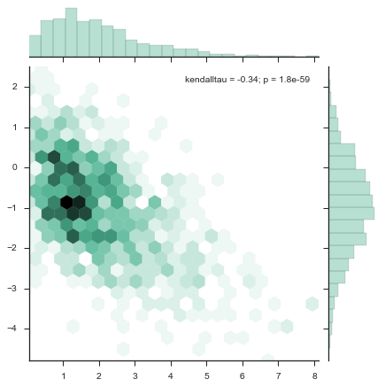
|
Seaborn: statistical data visualization
I started to use Seaborn,
a Python visualization library based on Matplotlib,
which provides neat graphics with easy-to-use interfaces. Highly recommended!
|
|
|
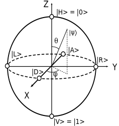
|
Club Klein Bottle (a.k.a CKB)
Together with Donghun Lee,
we have been organizing monthly science and technology forum.
We cover a broad range of topics from quantum computing to artificial intelligence
during 3-hour-long monthly session.
( topics covered so far.)
|
|

|
Fun with teaching kids how to program!
I taught a class of Dongtan elementary school how to program using Scratch,
a tile-based visual programming environment and toolkit. You can try it
here!
|
|
{kind=link}
{kind=link}
{kind=link}
{kind=link}
{kind=link}
{kind=link}
{kind=link}
{kind=link}
{kind=link}
{kind=link}